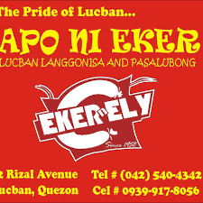
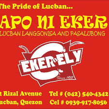

History of Lucban
Lucban, Quezon, is famous for the Pahiyas Festival, a colorful celebration of thanksgiving. Known for its longganisa, pancit habhab, and religious heritage, Lucban is a thriving cultural and economic hub in Quezon Province.
Demographics
- Population: ~52,000
- Barangays: 32
- Language: Tagalog, Filipino, English
- Main industries: Agriculture, food products, tourism, education
Upcoming Events
- Pahiyas Festival – May 15
- Town Fiesta – August
- Chamber Business Summit – October
Gallery

 
